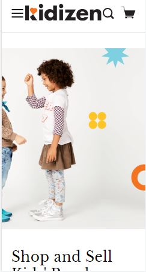

Visual Hierarchy
Simply Chocolate
Simply Chocolate`s Web Address
Visual Hierarchy is used to rank design elements and influence in the order you want your users to view them. By using principles like contrast, scale, balance and, more, you can help establish each element in its rightful place and help the most important elements stand out.
Simply Chocolate is in my opinion a great example of how to use size and scale to emphasize visual hierarchy. The first thing I am drawn to in the design is the huge text that explains what the product is all about. This is done in a way that does not detract from the other elements on the screen.
Rule of Thirds
Kidizen Inc.
In its most simple form the rule of thirds refers to a 3 by 3 grid that fits on top of any image. There are no specific sizes to the blocks – only that they are equally shaped. The grid works horizontally or vertically and helps you determine how the eye follows an image or group of images (such as a website).
Kidizen used the rule of thirds to bring focus to their site. They used vertical thirds as a focus throughout their site. The homepage is designed by grouping the image into thirds and focussing on the left side.
White Space and Clean Design
Apple
Apple sure do know how to confidently and properly use it in order to garner attention, sales and impact. Apple’s products are an art in and of themselves and by using white space, the visitor only has one focus at any given time. No distractions here.